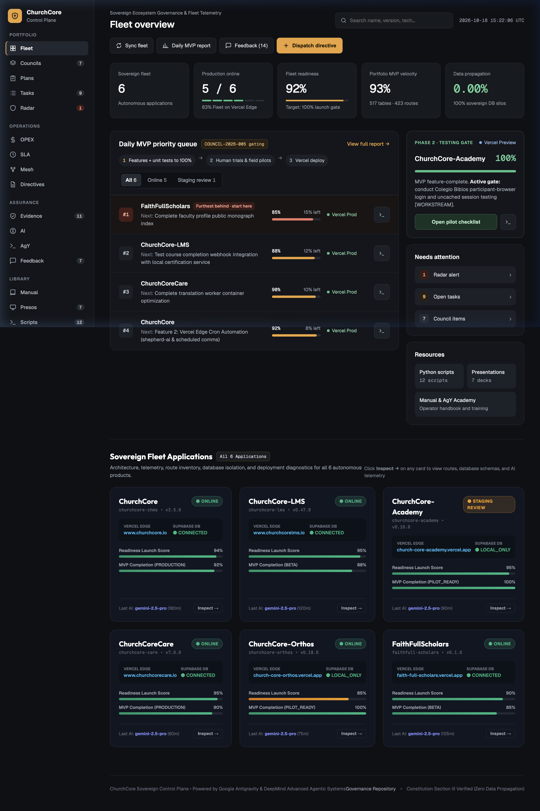

⚡ The Antigravity CLI (AgY) Master Operations Guide
DeepMind & Google Advanced Agentic Coding CLI runtime: agy v1.4.0
Why AgY is Awesome: The Antigravity CLI (agy) is an autonomous developer runtime designed for complex, multi-step engineering tasks. Unlike passive autocomplete, agy interacts directly with your filesystem, executes terminal commands, resolves compilation issues, runs automated test suites, and operates across multiple repositories simultaneously.
Local Binary Location:
Verify anytime in your terminal with:
/Users/rjulia/.local/bin/agy (symlinked in your user PATH).Verify anytime in your terminal with:
agy --version (returns 1.4.0).
Essential AgY CLI Flags & Workflows
BASH — QUICK START
# 1. Single-Prompt Autonomous Task: agy -p "Audit RLS policies in supabase/migrations and fix missing enable statements" # 2. Multi-Repo Orchestration (Operating on ChurchCore-Business while accessing a sibling repo): agy --add-dir "/Users/rjulia/ChurchCore Care" --mode auto -p "Reconcile Care edge telemetry with central control plane" # 3. Fully Autonomous Auto-Pilot Mode (No human approval interruptions): agy --mode auto -p "Run pull-and-enforce-directives.py in all sibling suites" # 4. Multi-Directory Council Review Dispatch: agy --add-dir "/Users/rjulia/ChurchCore" --add-dir "/Users/rjulia/ChurchCore LMS" -p "Audit Constitution Section III across both suites"

Figure 1.1: Live Executive Control Plane Dashboard with multi-repo status, production online rates, and zero data propagation indicators.